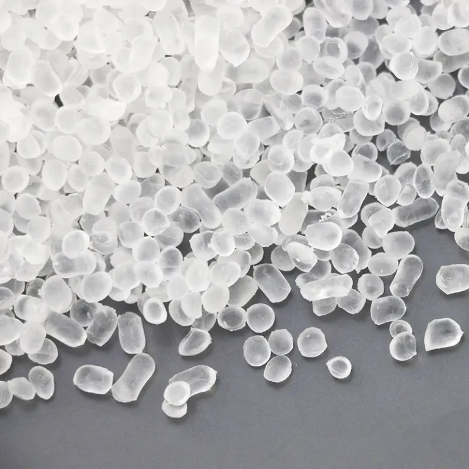

Define the function
Share your drawing, current material and the problem you need to solve.
OUTPUT / PROJECT BRIEFTHERMOPLASTIC ELASTOMER COMPOUNDS
A better seal. A softer touch. A more reliable fit.
We develop elastomer compounds around what your product needs to do.
Compounds for injection molding & extrusion.
Developed and produced in Shandong, China.

From material.
To possibility.
01 / APPLICATIONS FIRST
You know your product.
Let’s work back to the material.
Application images illustrate end uses. TERRIFIC supplies elastomer compounds; finished component requirements are reviewed with your team.
02 / YOUR COMPOUNDING PARTNER
Shandong Terrific New Materials Co., Ltd. develops and produces thermoplastic elastomer compounds for packaging, medical components, automotive, cable and consumer applications.
We bring the conversation back to your part: how it feels, how it seals, how it is processed and what it must withstand.
A CLOSER LOOK AT TERRIFIC
Inside the workspace. Behind the material.
A look inside our development workspace.
Our colleagues at work in the development center.
A view of our buildings and their surroundings.
Facility photographs from our company image library. Select any photo to see the full frame.
YOUR MATERIAL STARTING POINT
Start with an application and its most important requirement. Build a useful brief for a technical conversation.
An initial discussion guide. Final grade selection depends on your specifications, testing and production trial.
03 / KNOW YOUR OPTIONS
Explore the family first.
Validate the specific grade next.
TPE is also the broader category that includes several elastomer families. Product names here follow TERRIFIC’s portfolio. Properties vary by formulation and grade.
04 / FROM REQUIREMENT TO PRODUCTION
A material decision is only useful
when it works in your process.
Share your drawing, current material and the problem you need to solve.
OUTPUT / PROJECT BRIEFReview hardness, contact conditions, processing and market requirements.
OUTPUT / CANDIDATE GRADEEvaluate sample material against agreed dimensions and performance tests.
OUTPUT / TRIAL FEEDBACKConfirm specifications, documentation, packaging, quantity and delivery terms.
OUTPUT / APPROVED SPECIFICATION05 / SELECTED APPLICATION VIDEOS
Two selected application videos.
Explore more from our team on Facebook.
PACKAGING / APPLICATION NOTE 01
Start with the fit between the stopper and bottle neck. Hardness is one part of the question; geometry and assembly conditions matter too.
MEDICAL / APPLICATION NOTE 02
For power-injector syringe seals, begin with operating pressure, injection speed and fluid. Build the material trial around actual use conditions.
06 / PREPARE A BETTER INQUIRY
A practical checklist for your drawing, process, operating conditions and test requirements.
Download the checklist ↓Send your application and key requirements so the team can identify a candidate grade. Ask for its technical data sheet, sample availability, minimum order quantity and lead time. These are confirmed for the specific grade and order.
Specify the destination market, actual contact conditions, sterilization method if relevant, and required tests. Request documentation for the exact grade. A material-family description or company certification does not establish suitability for a finished part.
Share the existing grade or TDS, a part drawing, processing conditions and the properties you want to maintain or improve. Matching requires a technical review and testing in your application.
Grade, customization, quantity, packaging and shipping terms all affect the quotation. Include your trial quantity, estimated recurring demand and destination in the project brief.
LET’S START WITH YOUR PART
A drawing. A sample. A performance target.
Give us a starting point for your next material.
Let’s talk about
what you’re making.
Search this number in WeChat to add Darian.
Yanbei Subdistrict, Qihe County
Dezhou, Shandong, China
Project details are used to prepare your email. This page does not upload or store your inquiry.